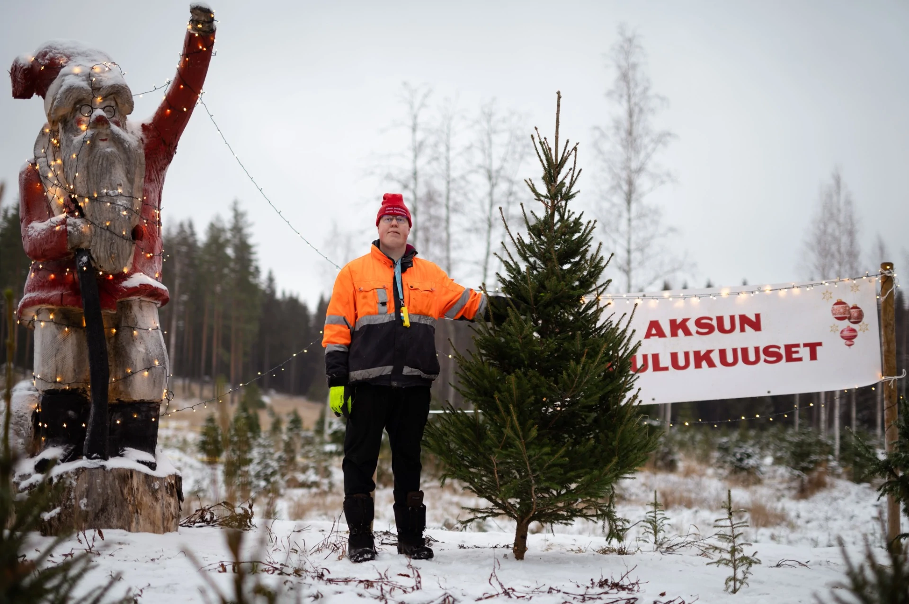

Meistä
Aksun Joulukuuset on joulukuusten myyntiin ja kasvatukseen keskittynyt pienyritys. Joulukuusikauppaa on tehty suvussamme jo vuodesta 1981. Aksun laadukkaat joulupuut kasvavat ilman torjunta-aineita ja kemiallisia lannoitteita – puulajeina metsäkuusi, serbiankuusi ja pihdat.
Kun haluat jouluksi tuoreen ja kotimaisen joulukuusen, löydät meiltä etsimäsi. Voit tulla hakemaan kuusen suoraan viljelmältä Kuusen hakuretkelle tai tilata sen kotiovelle, yritykseen tai tapahtumiin.
